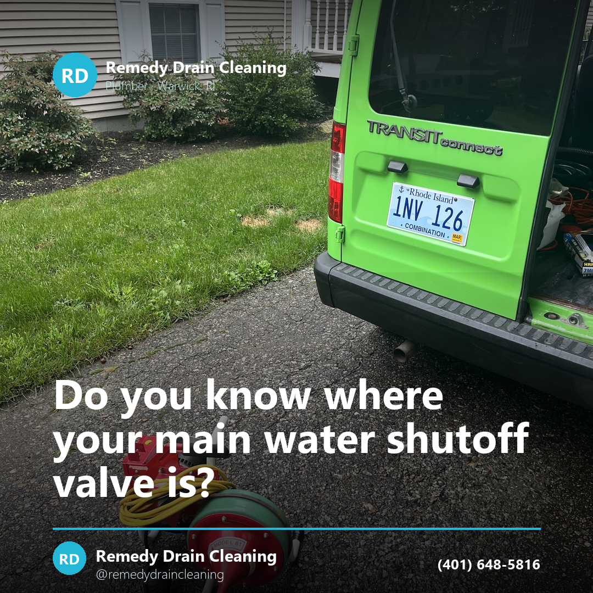
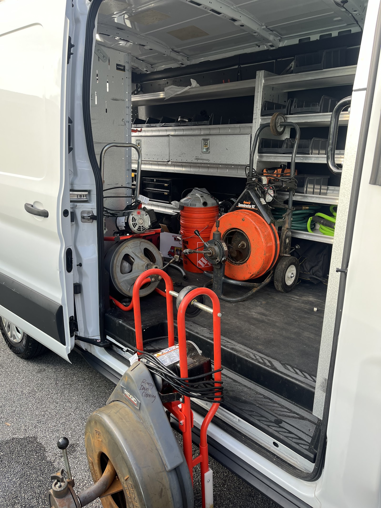
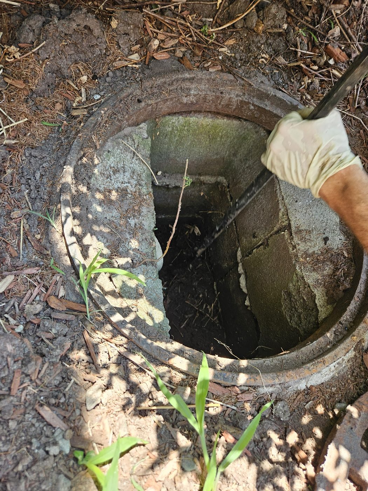
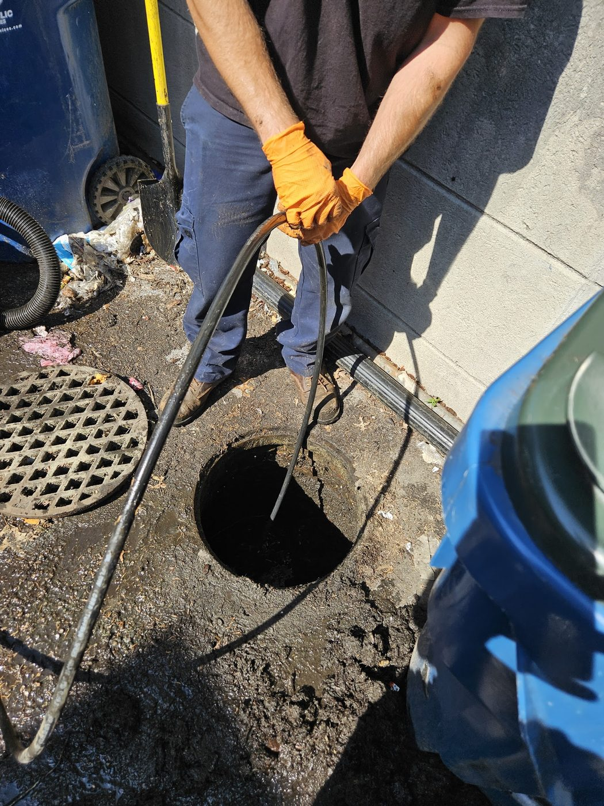

Post idea · Instagram
Do you know where your main water shutoff valve is? In a lot of Warwick homes it's near the water meter or in the basement by the front wall.
Remedy Drain Cleaning snakes sinks, tubs, laundry, grease, floor and main drains — 24/7, anywhere in Rhode Island. Affordable drain cleaning, in their own words, out of a shop on Brownlee Boulevard in Warwick.
Drains are the whole job here. Every one of these lines fails the same way — slowly, then all at once, usually on a night nobody planned for.
Grease and food have been narrowing the same stretch of pipe for years. It drains slow, then it holds water, then it stops.
Hair and soap, almost every time. Standing in an inch of water is the warning; the clog itself is usually a few feet in.
The standpipe behind the washer that overflows partway through a cycle and puts water across the floor.
A grease line that has been closing up on you for a long time and is now down to a trickle. Cabled back open.
Basement and utility floor drains — the ones that back up when the rest of the house is running at the same time.
The line everything else feeds into. When it goes, it comes back up through the lowest fixture in the house. Opened at the cleanout.
Sometimes the blockage is the least of it and the part itself is finished. Two of those we replace outright.
The pump in the pit that you find out has quit when the basement is already wet. Pulled and replaced.
Cracked, rocking, or clogging every other week no matter what goes in it. Old one out, new one set.
The van, the machines, and the part of the job nobody photographs.



Tell us which drain it is and what it's doing. If it can wait until morning we'll say so — and if it can't, we're already up.
(401) 648-5816Content